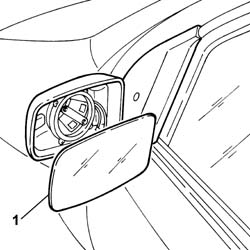

7005R35 door mirror reflector - r r
- Path
- Procedures > 70 FITTINGS > 7005 PASSENGER COMPARTMENT FRONT SIDE DOORS > 7005R front door mirrors > 7005R35 door mirror reflector - r r
- Kind
- repair procedure (removal / refitting; the operation number is the code)
- Applies to
- all engines; all production periods
- Interactive page
- https://sloeber94.github.io/elrnDB-fPnd/en/#/2753078
Applies to: all engines; all production periods
 Removing
Removing
 Refitting
RefittingDisconnect the battery negative terminal.
Using a suitable tool, remove the reflector and disconnect the electrical connections for the external rearview mirror defroster.
1. Remove the external rearview mirror reflector.

Applies to: all engines; all production periods
Refitting
RemovingConnect the defrosting electrical connections, fit the external rearview mirror reflector and check that it is secure.